zigbrew, or how my Sage Barista Express joined the smart home
Two Zigbee dry-contact relays across the POWER button and the grinder switch, driven by Home Assistant. It turns itself on when I get in the shower and grinds a dose when I walk into the kitchen. Here's the whole build, traps included.
The Barista Express heats its thermoblock in a couple of minutes. Everything the coffee actually touches takes twenty.
Group head, portafilter, basket, the metal around them: all of it has to soak up heat before the first shot tastes right. Sage's own manual says a cold portafilter and basket lower the extraction temperature enough to spoil it. I've tested that claim by impatience, many times. It holds.
So the machine needs to come on about twenty minutes before I want coffee, and I don't want to think about it. kopiro did the power button with a Tuya relay, building on a Home Assistant community thread. I did the same with Sonoff relays, then kept going and did the grinder.
fn press_the_button()
Nothing switches the machine's mains. A relay just presses the button for me, electrically. The relay's contact sits across the same two wires the front-panel button uses, closes for half a second, and lets go. The board can't tell the difference.
Two properties of the relay make this safe. It must be momentary, so it can never hold the button. And it must be a dry contact, an isolated switch that puts no voltage of its own into the machine. That second one turns out to matter more than I expected.
const parts
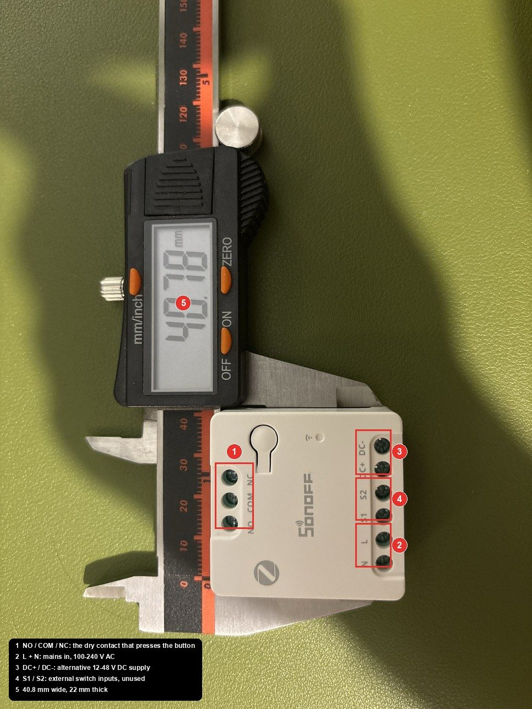
| Item | Notes |
|---|---|
| Sage Barista Express BES870 | or the Breville twin. Other Sage models differ inside. |
| Sonoff MINI-ZBD, one per button | 100-240 V AC in, isolated NO/COM/NC out. Zigbee2MQTT supports it natively, inching included. |
| WAGO 221 lever connectors | 5-way for the mains tap if you're feeding two relays. |
| 0.75 mm² flex | A metre of ordinary three-core does every lead. |
| Soldering iron, heat shrink | For the button wires. WAGOs don't fit there. |
| Multimeter with a beeper | Continuity is the whole job. |
| Cable ties, tape, a marker | Label everything. Every wire in the loom is the same colour. |
Part of this touches 230 V. Unplug at the wall before opening anything, and again before every step that touches wiring. The board's low-voltage side is not isolated from the mains, so never probe it plugged in. If that sentence worries you, this isn't the project for you.
open the_machine
Water tank off, every screw on the back, then the one you'll miss: under a round plastic cap in the tank recess, just right of the water inlet. Prise the cap off with a fingernail. The rear panel then lifts a few millimetres and tilts out from the bottom. The cup tray on top lifts off separately, with the bean-hopper cradle on its underside.
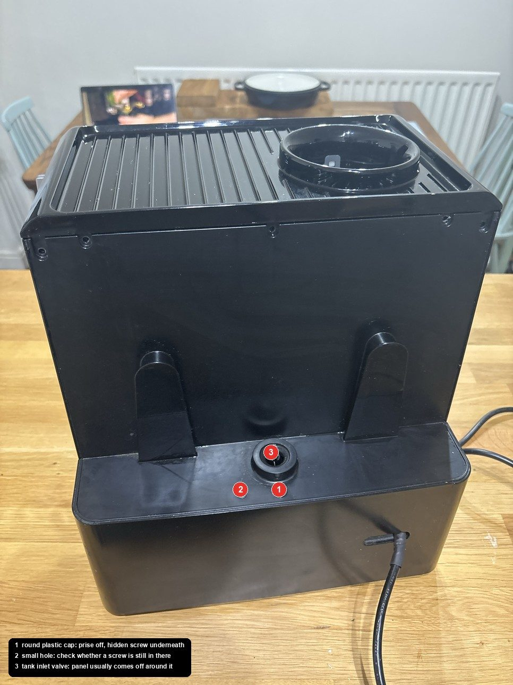
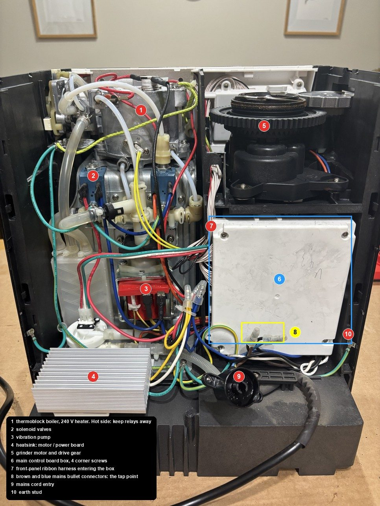
read the_board
Four corner screws on the white box. The board is a BV1871A1, and two things about it shape everything after.
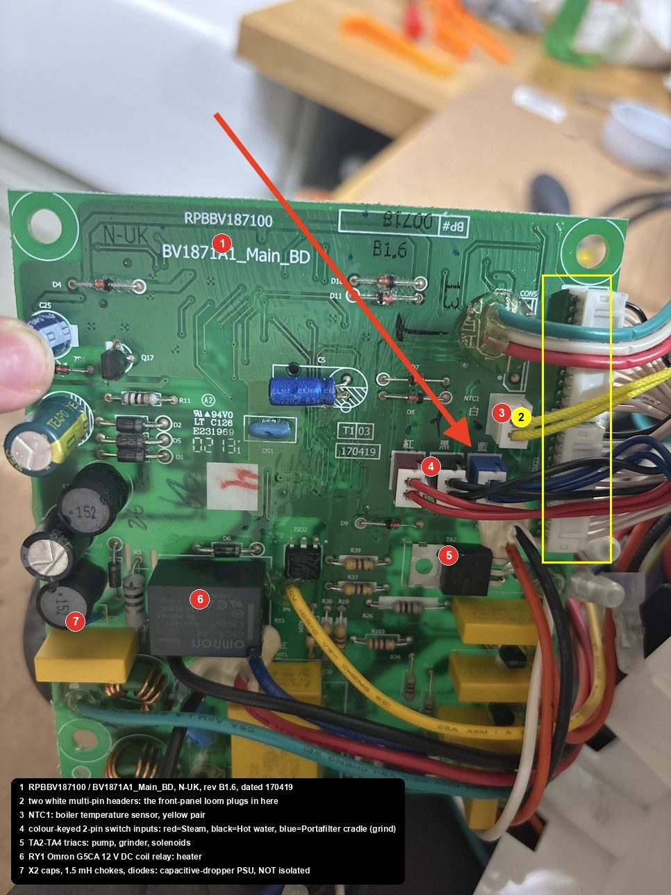
The front-panel wiring plugs in. A loom of identical off-white wires lands on two headers next to the microcontroller. One serves the POWER side of the panel, the other the shot buttons. That's where the probing happens.
The supply is transformerless. Yellow X2 capacitors, chokes, a diode chain, no transformer. So the board's "ground" sits at mains potential while the machine is plugged in. It's why the relay must be a dry contact, why you only probe with the plug out, and why I dropped the tempting idea of running the relay from the board's 12 V rail. There is one, the heater relay coil uses it, but it's a live 12 V.
find the_two_wires()
You need the two wires the POWER button joins when pressed. Every wire in the loom is the same colour except one, so this is done by position, and the neat way removes every confusing reading the board would otherwise give you.
With the plug off, the wires only see the panel: buttons and LED rings. A pressed button is a clean short. Nothing else looks like one.
The crimp tails are exposed where each wire enters the housing, so a normal probe tip reaches them. No need for anything thinner.
Tape the button down so both hands are free. LED lines show a one-way forward drop whether or not a button is pressed; ignore those.
The forum thread found "first and fourth" on a different unit. Treat any such number as a hint to check first, never as an answer.
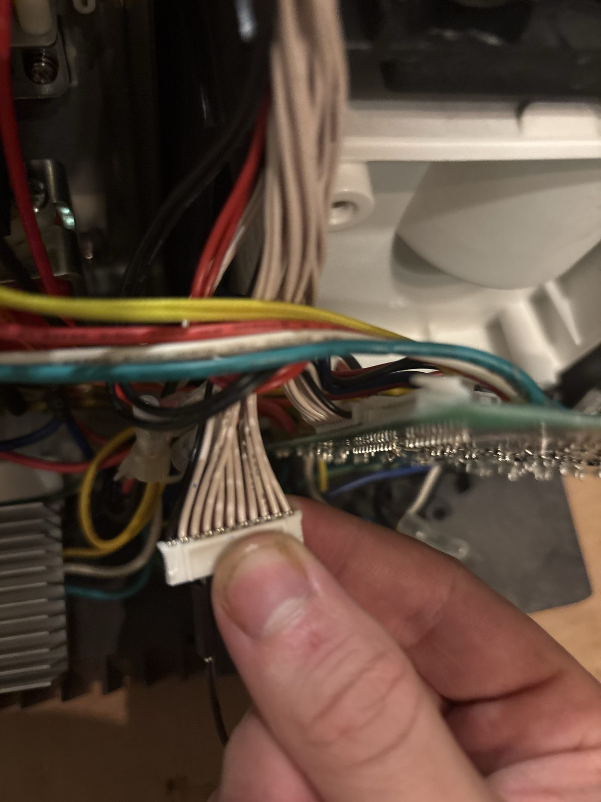
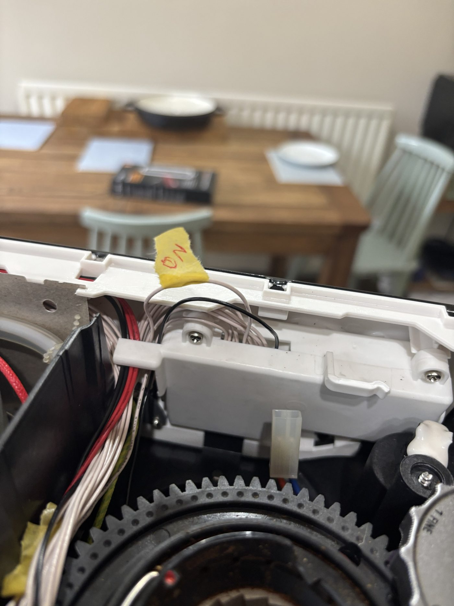
power the_relays()
kopiro spliced into the mains. On the BES870 it's easier: where the cord's brown and blue meet the internal wiring, just below the control box, each core ends in an insulated bullet connector. Pull it apart, cut the crimps off, and a WAGO takes both halves plus the new lead. Nothing else is cut, and the bullets can be re-crimped if the mod ever comes out.
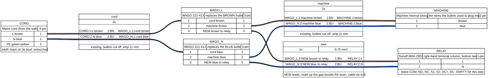
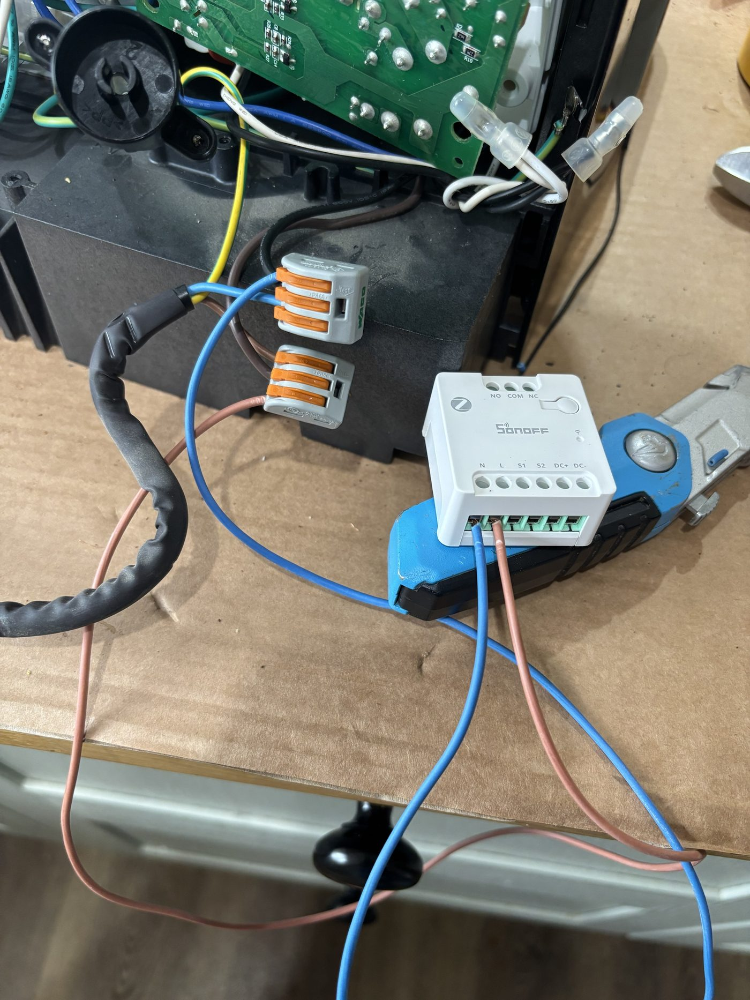
configure before_you_wire()
This order matters. Out of the box the relay is a normal on/off switch, and some modules restore to "on" after a power cut. Either would hold the button down forever. So with L and N connected and nothing on COM or NO, plug in with your hands clear, pair in Zigbee2MQTT, and set four things.
| Zigbee2MQTT | Value | Why |
|---|---|---|
power_on_behavior | off | comes up open after a power cut |
inching_control | ON | momentary |
inching_time | 0.5 s | the minimum, plenty for a press |
inching_mode | OFF | turn on, then auto-off |
# three ON commands, four seconds apart
Toggle it three times from Z2M. Each time the relay clicks, reports ON, then reports OFF within a second with no further command. That log is the moment I stopped worrying about the design. Unplug again before the next step.
tee into_the_button()
Each of the two wires is cut once and rejoined with a third lead branching to the relay. The real button stays in circuit, in parallel with the relay contact, so it works whatever the relay does.
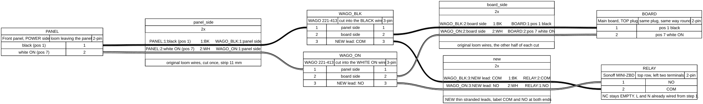
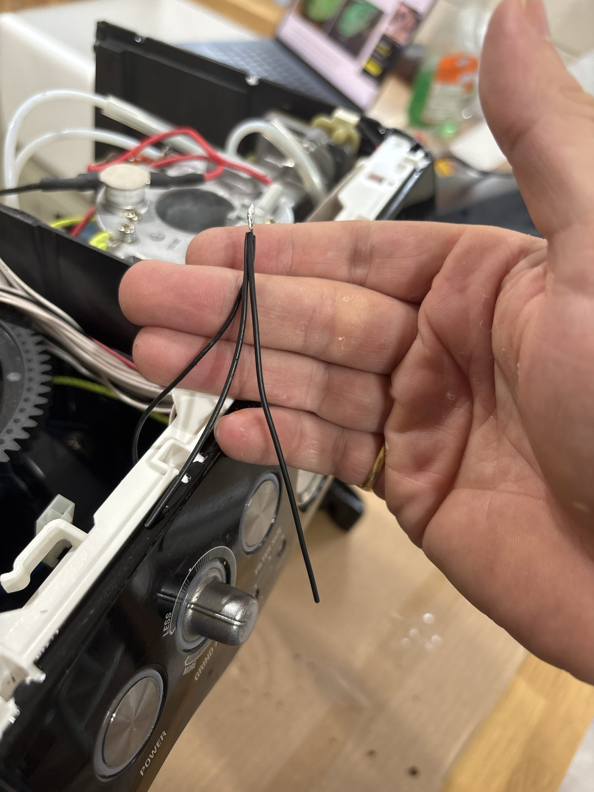
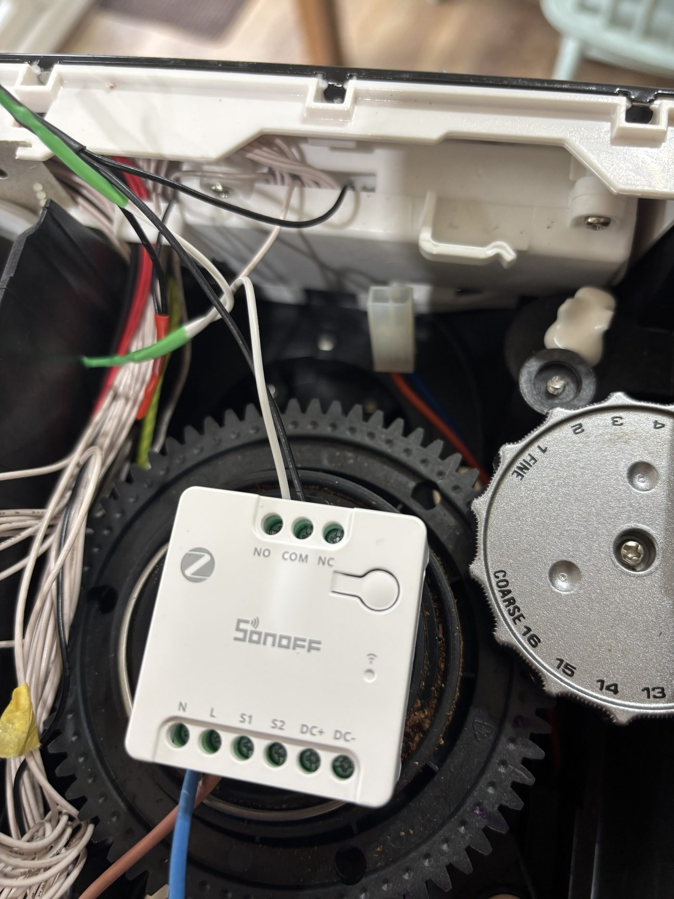
Loom plugged back on, machine plugged in, one tap in Home Assistant: the Sage woke up as if I'd pressed the button. The physical button still worked. Phase one done. Then I noticed something on the board.
also the_grinder()
Three colour-keyed two-pin connectors on the board are silkscreened Steam, Hot water and Port filter. I'd assumed they drove the solenoids. A meter across the blue Port filter one while pressing the portafilter into the grinder cradle: continuity. They're switch inputs, and blue is the grinder trigger.
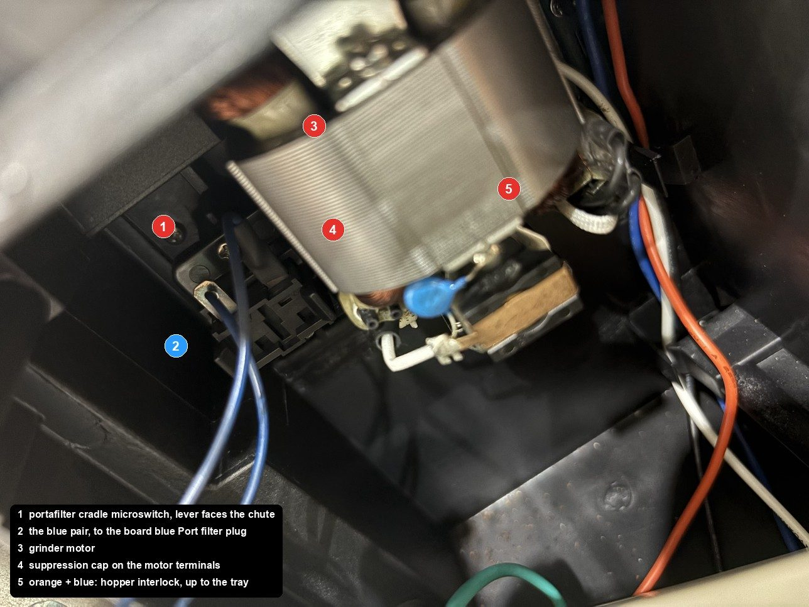
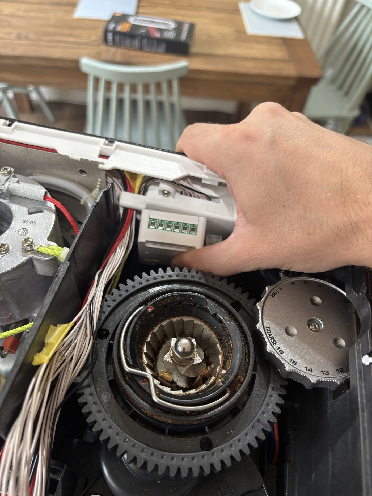
Both wires are blue, and it doesn't matter which is which: a switch contact has no polarity. Relay two was configured identically to relay one, and a 0.5 s pulse runs a normal dose. Two things I learned the hard way:
The grinder is ignored while the machine is in standby. POWER first, always. An automation that grinds before it wakes the machine does nothing, silently.
With the cup tray off, the bean hopper isn't locked, the interlock on the tray's underside is open, and the grinder won't run for the relay or the real switch. The machine tells you with SINGLE and DOUBLE flashing alternately. Not a fault: "lock the hopper". Cost me twenty minutes.
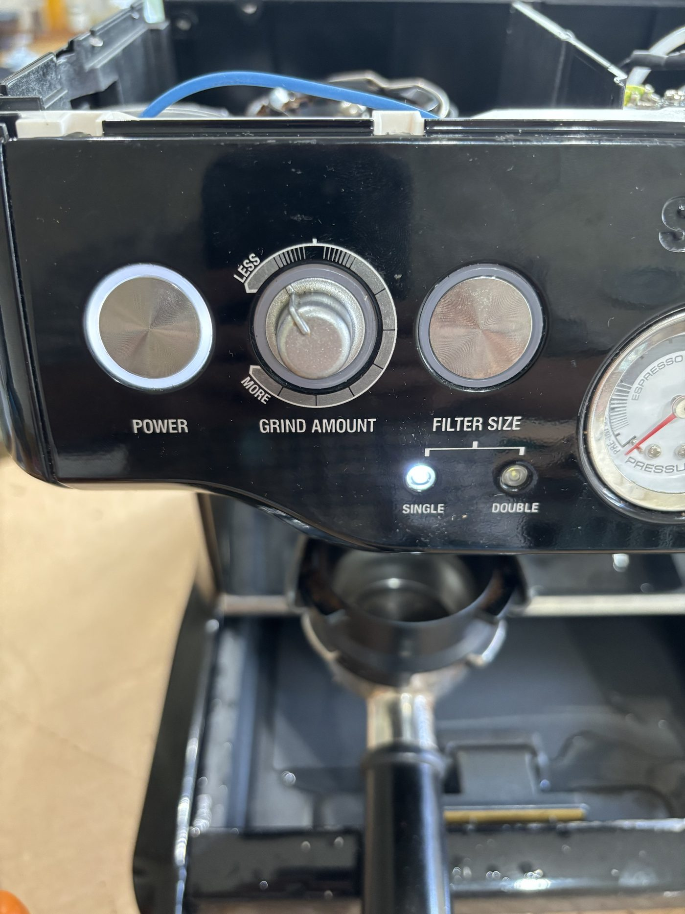
automation morning_coffee
My house already knows when I've had a shower: a current sensor on the shower pump sets a marcus_showered flag that's cleared each night. And the kitchen has occupancy sensors that run the lights. So the coffee hangs off those, not a fixed time.
- id: zigbrew_kitchen_grinds
alias: "zigbrew - Kitchen arrival runs the grinder"
triggers:
- trigger: state
entity_id: [binary_sensor.kitchen_occupancy_a, binary_sensor.kitchen_occupancy_b]
to: "on"
conditions:
- condition: state
entity_id: input_boolean.zigbrew_coffee_armed
state: "on"
- condition: template
value_template: >-
{{ (now() - states.input_boolean.zigbrew_coffee_armed.last_changed).total_seconds() > 60 }}
actions:
- action: input_boolean.turn_off # disarm first
target: { entity_id: input_boolean.zigbrew_coffee_armed }
- action: switch.turn_on # then one press
target: { entity_id: switch.zigbrew_grind }
mode: single
// what_id_tell_you
Under the cap in the tank recess, right of the inlet. Look there first.
No grinder, and flashing filter-size lights. Not a fault.
Every power-up. Keep test runs to seconds, or put the tank back before testing.
Solder the button breakouts. WAGOs are fine at the bottom for the mains tap.
The 12 V is there, but it's referenced to mains.
POWER toggles. If it were already on when the shower fired, the press would turn it off. A power-monitoring plug fixes this; the heater draw is unmistakable. That's the next change.
Portafilter in the cradle at night.
Inching and power-on-off first, with COM and NO empty. Then wire the button. Never the other way round.
export full_harness
Everything from the mains inlet to the front panel in one drawing, as built for the POWER relay. The grinder relay is the same pattern on the blue pair. The source is a short YAML file in the repo, so if your machine's positions differ, change two lines and re-render.
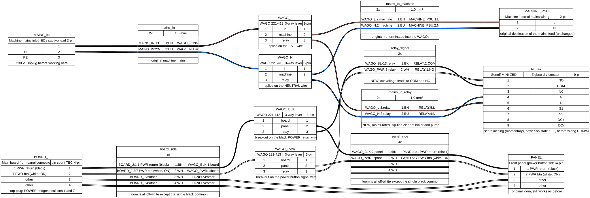
A power-monitoring plug for machine state. Then the shot buttons, which are the same trick on the other header. Tamping still needs a human, so that one will be a voice command rather than an automation.
The build log, every photo, the wiring diagrams and the automation YAML are in marco308/zigbrew. Thanks to kopiro for going first.